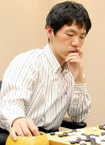

李昌镐简介

生平简介
李昌镐（朝鲜语：이창호，1975年7月29日－），韩国围棋棋手，出生于韩国全罗北道全州市，现居住在首尔，血型A，喜好读书、登山、网球。李昌镐与曹薰铉、徐奉洙、刘昌赫被称为韩国的“老四大天王”。与李世石、朴永训、崔哲瀚被称为“新四大天王”。因年纪、姓名发音、国内战绩与中国的常昊九段相似，所以两人被称为“绝代双骄”。在九零年代中期到21世纪初期曾经多次拿下世界大赛冠军，统治国际棋赛长达十多年，为当时棋界公认的霸主。
李昌镐九段被认为是现代围棋历史上的天才棋士，对于官子的计算有独到之处，对世界围棋发展有重大影响。
成长经历
1982年3月，李昌镐进入全州教育大学附属小学。上小学后，他的数学特别好，计算能力十分突出。1983年1月，祖父开始教他学棋。虽说8岁开始学棋不算早，但李昌镐进步神速，仅半年时间祖父就不是他的对手了。同年6月，他投师于田永善六段门下，继续学棋。1984年2月，李昌镐就在少年围棋赛中战胜了师兄弟柳时熏，夺得第一个冠军头衔。
李昌镐围棋生涯中的另一个重要人物是韩国围棋国手曹薰铉。李昌镐9岁的时候拜曹熏铉为师学艺。李昌镐刚出道时正是曹熏铉和徐奉诛争霸的年代，当时大部分的头衔被曹熏铉把持，而挑战权基本都属于徐奉诛，但李昌镐一出道就将徐奉诛一举打垮，取得了和师傅较量的资格。拜师后两年，李昌镐就拿到了自己职业生涯的第一个冠军。1990年，年仅14岁的李昌镐四段在韩国的各大棋赛中连胜41局，引起了韩国棋界的注意。同年，在富士通杯世界围棋锦标赛中，战胜了日本超一流棋手武宫正树，还在韩国的正式比赛中，以3比2战胜师傅，夺走了曹薰铉“最高位”的头衔。
随后李昌镐一发而不可收，1990年3个头衔，1991年6个头衔，1992年8个头衔，1993年12个头衔，到了1994年李昌镐就让曹熏铉只剩1个头衔了，韩国棋坛彻底迎来了“李昌镐时代”，而这一年他才19岁，放眼世界棋坛能在19岁就有如此辉煌战绩的找不到第二人。
个人成就与技术特点
他从1992年夺得第一个世界冠军起，至2007年共夺得18个个人赛冠军、13次团体赛冠军（作为主将夺得8次）。他获得过2007年以前举办的任何一项世界职业围棋大赛（包括应氏杯、富士通杯、东洋证券杯、LG杯、三星杯、丰田杯、春兰杯、中环杯等个人赛以及真露杯、农心杯等团体赛）的冠军，真正实现了世界职业围棋比赛“大满贯”。
在围棋界，李昌镐有“石佛”、“外星棋手”、“少年姜太公”、“神算子”和“鳄鱼”等称号。他外貌柔弱，常面无表情，喜怒不形于色。其棋风厚实均衡，基本功扎实，计算精确，各种战法样样精通，他下出的棋很少出错，常令对手感到无隙可乘，其官子功夫号称“天下第一”，且其心理素质极佳，常能在激烈的比赛中自始至终保持极其冷静的心理，从而使其对手在后半盘常有压力感，丧失斗志。对李昌镐的棋，对手很难找到非常有力的攻击手段。
李昌镐技术全面，行棋绵密老成，计算精准无比，官子功夫极佳。在其全盛时期，凭借卓越的全局驾驭能力和天下第一的官子功夫，横扫中日韩三国的顶级高手，对中国围棋的领军人物马晓春、常昊均有过十连胜的骄人战绩。李昌镐的棋朴实无华、大巧若拙，善于“兵不血刃，不战屈人”。他在对局中经常下出看似吃亏乃至笨拙的棋来，但在关键时刻却能发挥巨大作用。他的棋很少出错，但只要对手稍有失误，便会遭到他的致命一击。
人物评价
一代围棋大师吴清源在评论曹李师徒俩时说：“曹薰铉是最有才能的棋手，他和我是一个老师出身的。我和他先后师从濑越宪作。而李昌镐的成功，就是靠他的超常的用功，他除了下棋没有别的事情。”
中国已故棋评家赵之云在评述李昌镐的棋风时说：“李昌镐有句名言：‘棋局如人生，下棋时，布局越华丽，就越容易遭到对手的攻击，生活中，少犯错误的人，要比华而不实的人更容易成功。’由此可见，李昌镐其人其艺已浑然一体，在他的棋中，表现出他的人生观与世界观。一般说，李昌镐的棋风朴实无华，是一种本身不出错并耐心等待对方出错的‘后发制人’的棋。他有极强的实力，但又不轻易动武。他的思路，看来与古代军事家‘先为己之不胜，以待敌之可胜’是一脉相承。当然，棋要下得‘几无破绽’，难度极高。如果一名棋手没有扎实的基本功与长距离作战的耐力，就根本无法做到这一点。但对李昌镐来说，这一切他早已具备。”